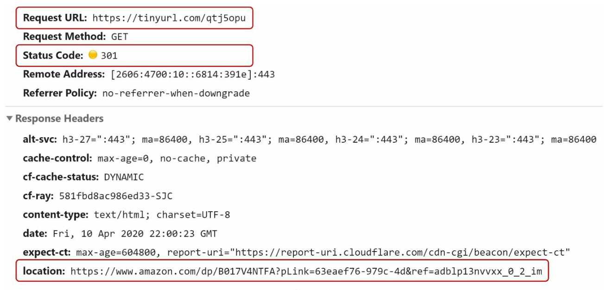
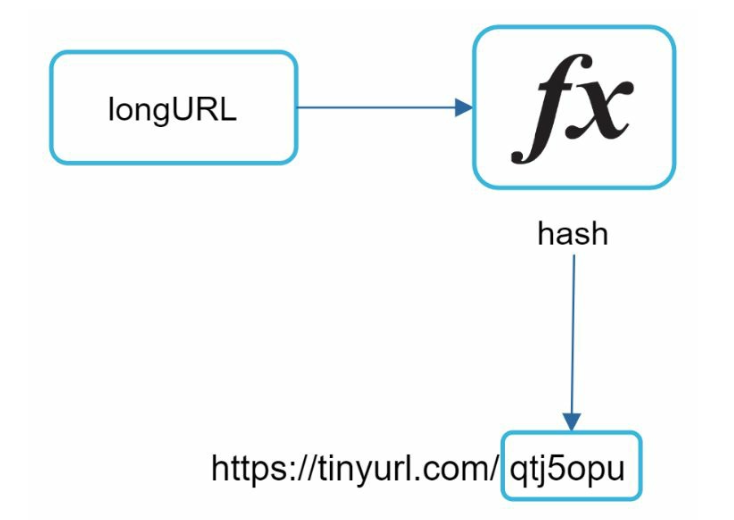
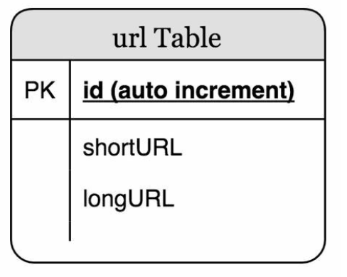
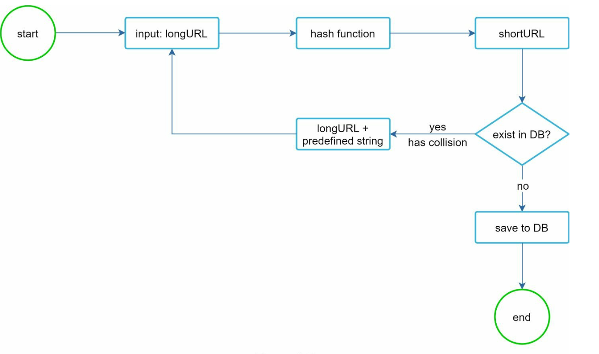
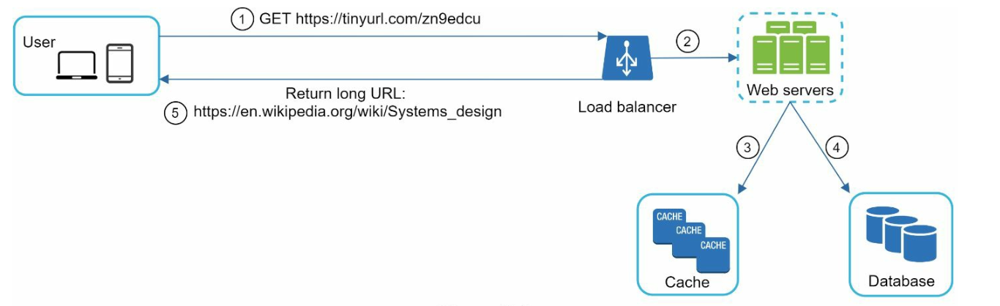

Chapter 8: Design a URL Shortener
Introduction
This chapter discusses the design of a URL shortening service like TinyURL. The system's main goals include URL shortening, redirecting, and high scalability to handle large traffic volumes.
Requirements
- Shortened URLs must be unique and as short as possible.
- Handle 100 million URL generations per day with a 10-year support capacity.
- Support efficient read operations with a 10:1 read-to-write ratio.
- Store 365 billion records, requiring approximately 365 TB of storage over 10 years.
Step 1: High-Level Design
API Endpoints
1. URL Shortening:
- Endpoint:
POST api/v1/data/shorten - Parameters:
{longUrl: longURLString} - Returns:
shortURL
2. URL Redirecting:
- Endpoint:
GET api/v1/shortUrl - Returns:
longURLfor redirection.

URL Redirection
- 301 Redirect: A 301 redirect shows that the requested URL is “permanently” moved to the long URL. The browser caches the response, and
- 302 Redirect: Temporary; useful for analytics like tracking clicks.
subsequent requests for the same URL will not be sent to the URL shortening service.
URL Shortening

- Use a hash function to generate a short URL, mapping long URLs to unique shortened versions.
- The hash function must satisfy the following requirements:
- Each longURL must be hashed to one hashValue.
- Each hashValue can be mapped back to the longURL.
Step 2: Deep Dive into Design
Data Model
Store
id(primary key),shortURL,longURL.

Hash Function
1. Base 62 Conversion:
- Encodes numbers using characters
[0-9, a-z, A-Z], providing 62 possible characters. - Base conversion is another approach commonly used for URL shorteners.
- A unique id can be assigned to the short url and ID can be base 62 converted to get the short URL.
- A 7-character hash supports up to 3.5 trillion unique URLs, enough for 365 billion URLs.
Example:
Convert ID 2009215674938 to Base 62:
2009215674938→zn9edcu.
2. Hash + Collision Resolution:
- Use hash functions like CRC32, MD5, or SHA-1.

- One approach is to collect the first 7 characters of a hash value; however, this method can lead to hash collisions.
- To resolve collisions,recursively append a new predefined string until no more collision but this can be expensive.
- Resolve collisions with Bloom Filters for efficient lookup.

Comparison
- Hash + Collision Resolution:
- Fixed short URL length
- Does not need a unique ID generator
- Collision is possbile and needs resolution
- Not possible to find the next available short URL because it does not depend on ID
- Base 62 Conversion
- The length is not fixed and goes up with ID
- It needs a unique ID generator
- Collision is not possbile
- Easy to find the next short URL if ID increments by 1 (Can be a security concern)
URL Shortening Flow

1. Check if longURL exists in the database.
2. If found, return the existing shortURL.
3. Otherwise:
- Generate a unique ID using a distributed ID generator.
- Convert the ID to
shortURLusing Base 62. - Store the
URL Redirecting Flow

1. User clicks a shortURL.
2. Query
- Check the cache first for faster access.
- If not in the cache, query the database.
3. Redirect the user to longURL.
Additional Considerations
Rate Limiter
- Prevent abuse by setting limits on requests per IP.
Scalability
1. Web Tier: Stateless, scalable by adding/removing web servers.
2. Database Tier: Use replication and sharding.
Analytics
- Collect data like click rates, source, and timestamps for business insights.
High Availability and Reliability
- Ensure consistent and reliable services using database replication and fault-tolerant design.